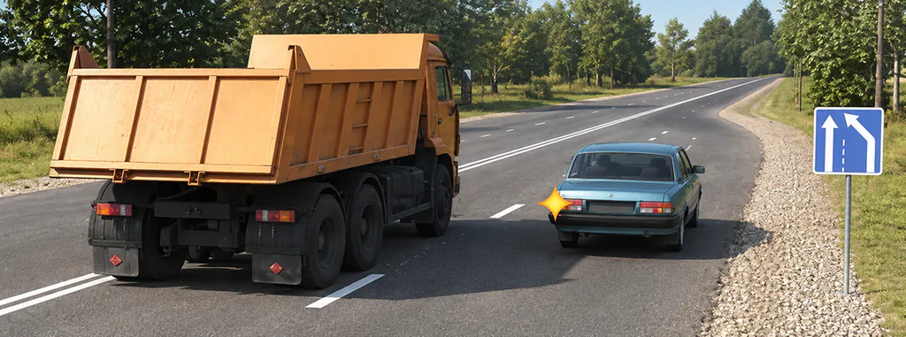
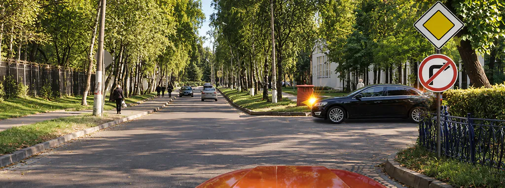

Почему поворотник не даёт преимущества: три задачи ПДД

Включённый указатель поворота сообщает о намерении, но не даёт преимущества и не освобождает от мер предосторожности. Это прямо закреплено в пункте 8.2. Чтобы решить билет, отдельно определите обязанность подать сигнал и обязанность уступить дорогу.
Проверим различие на трёх вопросах A/B: общая норма, перестроение при окончании полосы и выбор момента сигнала перед остановкой за перекрёстком. Подборка учебная; мы не называем эти вопросы самыми частыми или трудными без статистики.
Сигнал и приоритет отвечают на разные вопросы
| Что нужно установить | О чём говорит | Чего не заменяет |
|---|---|---|
| Сигнал указателем или рукой | О намерении совершить предусмотренный манёвр | Правило, кому уступить |
| Преимущество | О первоочередном движении в заданном направлении | Обязанность предупредить и действовать безопасно |
| Разрешённость манёвра | О возможности выполнить его в данном месте | Ни сигнал, ни сам факт наличия свободного пространства |
Пункт 8.1 требует сигнал перед началом движения, перестроением, поворотом, разворотом и остановкой; при отсутствии или неисправности указателей предусмотрен сигнал рукой. По пункту 8.2 он подаётся заблаговременно и прекращается немедленно после манёвра. При этом нельзя вводить других участников в заблуждение.
Задача 1. Даёт ли подача сигнала преимущество
A/B, билет 33, вопрос 7. Даёт ли преимущество в движении подача сигнала указателями поворота?
- Дает преимущество
- Дает преимущество только при завершении обгона
- Не дает преимущества
Проверить ответ
Верно: Не дает преимущества.
Верный ответ не содержит исключения «при завершении обгона». Сигнал не меняет очередность сам по себе. Вопрос специально позволяет проверить, не подменяете ли вы намерение правом требовать свободную полосу.
Не делайте и обратный вывод, будто указатели необязательны. Отсутствие преимущества от сигнала не отменяет обязанность предупредить. Две проверки выполняются вместе: нужен ли сигнал и можно ли безопасно осуществить манёвр по остальным требованиям.
Задача 2. Полоса заканчивается, поворотник включён

A/B, билет 4, вопрос 8. Кто должен уступить дорогу?
- Водитель грузового автомобиля
- Водитель легкового автомобиля
Проверить ответ
Верно: Водитель легкового автомобиля.
У легкового автомобиля заканчивается полоса, слева грузовик движется попутно без изменения направления. Водителю легкового нужно перестроиться, а по пункту 8.4 при перестроении уступают попутному транспорту, который продолжает движение по своей полосе. Поэтому правильный вариант — «Водитель легкового автомобиля».
Включённый левый указатель и знак конца полосы объясняют намерение и организацию движения. Они не превращают перестроение в обязательное предоставление места со стороны грузовика. Сначала определите, кто меняет полосу, затем примените соответствующую часть нормы.
Не смешивайте эту картинку с одновременным перестроением. Там нужно отдельно установить, что перестраиваются оба попутных транспортных средства, и применить правило о находящемся справа. Вопрос 4–8 изображает другую исходную ситуацию: один водитель уходит с заканчивающейся полосы.
Задача 3. Сигнал можно подать слишком рано

A/B, билет 38, вопрос 7. Вы намерены остановиться сразу за перекрестком. В каком месте необходимо включить указатели правого поворота?
- До въезда на перекрёсток, чтобы заблаговременно предупредить других водителей об остановке
- Только после въезда на перекрёсток
- Место включения указателей поворота не имеет значения, так как поворот направо запрещён
Проверить ответ
Верно: Только после въезда на перекрёсток.
Вы хотите остановиться сразу за перекрёстком. Если подать правый сигнал до въезда, другой водитель может понять его как намерение повернуть на перекрёстке. Поэтому правильный вариант базы — «Только после въезда на перекрёсток».
Смысл не в механическом правиле «включай в середине». Важно выбрать такой момент, который заблаговременно предупреждает о действительном действии и не вводит в заблуждение. Пояснение базы дополнительно уточняет, что включение сразу в начальной фазе въезда тоже может быть понято как запоздавшее сообщение о повороте.
Знак запрета правого поворота в рисунке не делает сигнал перед остановкой бессмысленным: сигнал нужен для намерения остановиться. Поэтому третий вариант, который объявляет место подачи неважным, неверен. Отделяйте конкретный манёвр от похожего значения того же указателя.
Что означает «заблаговременно» для решения билета
В приведённом пункте 8.2 нет универсального числа секунд для любых условий. Задача может проверять место включения, отсутствие заблуждения или окончание подачи после манёвра. Не добавляйте в ответ запомнённый из чужого совета числовой интервал, если его не задаёт правило или условие.
Особенно внимательно читайте соседние съезды и пересечения: слишком ранний сигнал способен сообщить не тот поворот, который вы задумали. Но это не повод подавать сигнал уже после начала действия. В учебном разборе нужно совместить оба требования, а не выбрать одно за счёт другого.
Упражнение: две отдельные строки
Для новой задачи напишите: «Какой сигнал и для какого действия?» и «По какой норме определяется, кому уступить?». В примере с окончанием полосы первая строка относится к левому перестроению, вторая — к пункту 8.4. В примере с остановкой за перекрёстком предмет проверки — понятный момент подачи сигнала.
Если ответ свёлся к «он моргает, значит, его надо пустить», вернитесь к пункту 8.2 и восстановите недостающую норму приоритета. Если вы решили, что имеющееся преимущество позволяет не предупреждать о повороте, повторите пункт 8.1. Эти два сокращения ведут к разным ошибкам.
Дополнительные условия манёвров собраны в разборе перестроения, поворотов и разворотов. В PDD Drive откройте новый билет своей категории и объясните обе строки до просмотра комментария. Проверяемое понимание здесь полезнее узнавания одного светящегося указателя на картинке.
Источники и проверка
В новом вопросе сначала определите манёвр, затем основание приоритета. Выберите свой комплект A/B или C/D.
Частые вопросы
Обязан ли другой водитель пустить меня после включения поворотника?
Сам по себе сигнал не создаёт такой обязанности. Очерёдность определяется соответствующими правилами, например пунктом 8.4 при перестроении.
Если полоса заканчивается, у перестраивающегося появляется преимущество?
В приведённом вопросе нет. Водитель легкового автомобиля уступает попутному грузовику, который продолжает движение по своей полосе.
За сколько секунд включать указатель поворота?
Пункт 8.2 требует заблаговременную подачу без введения других участников в заблуждение, но не задаёт одно универсальное число секунд для любых условий.
Нужно ли подавать сигнал, если у меня есть преимущество?
Наличие преимущества не отменяет обязанность предупредить о предусмотренном манёвре и принять меры предосторожности.